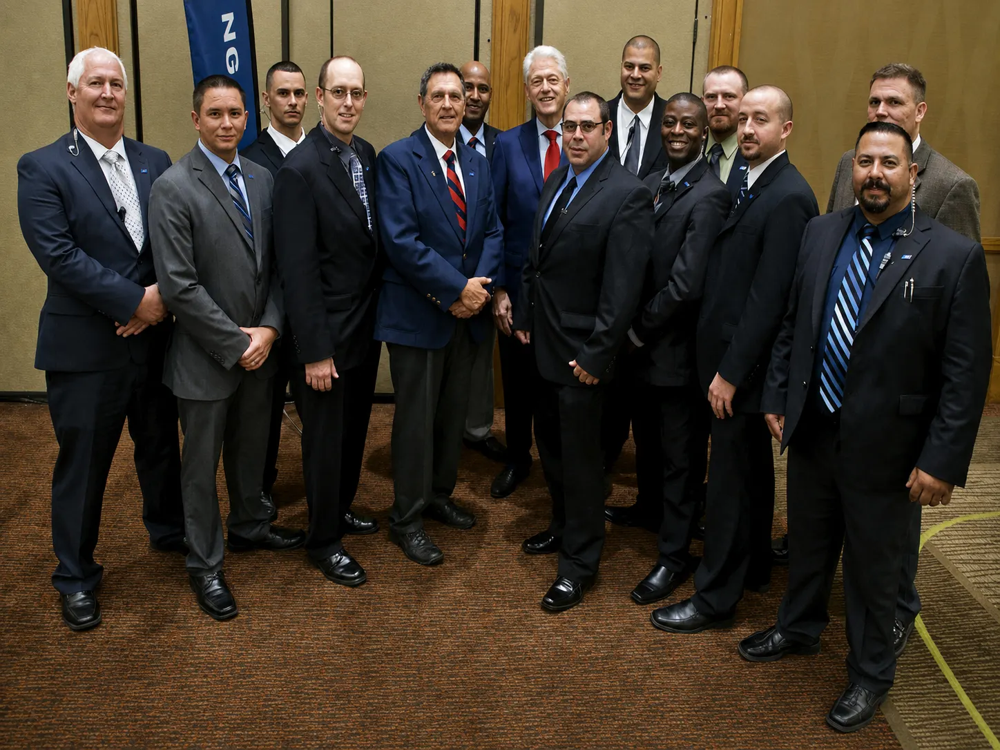

Professionalism
We expect our personnel to represent the company and its clients with preparation, sound judgment, and respect.
Colorado Protective Services
Learn more about the leadership, history, and professional principles behind Colorado Protective Services.
Company Leadership
Thomas P. Dalessandri is a leader who prioritizes integrity, nobility, and conviction above all else. Through his experience as a young patrol officer, a seasoned detective, a two-time elected sheriff of Garfield County, and now the CEO and founder of Colorado Protective Services, Tom has acquired an unwavering wisdom and keen instinct for security that few others can rival. His distinguished law-enforcement career includes thirteen years with the Aspen Police Department, where he served in leadership positions as deputy police chief and police chief, followed by eight years as Garfield County sheriff. He provides the direction and professional standards that guide the company and has built a reputation for exceptional leadership and an unmatched commitment to protecting others. That unwavering commitment has earned the trust of the clients and communities he has served throughout more than thirty years in law enforcement and public safety. With Tom at the helm, you can rest assured that your safety remains our company’s greatest endeavor.
Tom brings these same principles to every aspect of Colorado Protective Services, expecting each member of the team to operate with vigilance, discretion, accountability, and respect. His experience also includes serving as a security consultant to the Ninth Judicial District Court in Glenwood Springs, serving on the advisory board for the Colorado Joint Terrorism Task Force following September 11, 2001, and serving as a member of the National Sheriffs’ Association Committee on Weapons of Mass Destruction. This extensive background in security operations, risk management, special-event planning, emergency management, and critical-incident response has shaped a practical leadership approach centered on preparation, sound judgment, and clear communication. Under his direction, Colorado Protective Services strives not only to respond effectively to security concerns, but also to anticipate risks, earn lasting trust, and provide every client with the highest standard of professional care.
Tom’s commitment to public service has also extended far beyond traditional law enforcement. Following Hurricane Katrina, he led a large-scale relief effort in Mississippi that helped provide thousands of residents with food, essential supplies, and resources to rebuild their homes and communities. Working alongside the American Red Cross, FEMA, the Salvation Army, local citizens, and other relief partners, Tom helped bring emergency-services personnel from Colorado to affected areas. Their efforts supported the restoration of roads and schools while also providing emergency medical services to communities facing extraordinary hardship. This experience further reflects his ability to unite people, coordinate critical resources, and lead effectively during times of crisis.
“I rest easy at night knowing the people under my watch are protected and well taken care of.”

Our Background
Colorado Protective Services has provided professional security services for nearly three decades, supporting clients and assignments across the country. The company’s extensive experience in diverse communities and operating environments has created a strong understanding of the unique challenges, risks, and security requirements associated with each assignment.
CPS carefully selects its personnel through trusted referrals from business associates, law-enforcement professionals, public-safety partners, and respected members of the communities it serves. This established network allows the company to assemble dependable teams, respond to changing staffing requirements, and provide additional personnel when an assignment requires greater support. CPS is an equal opportunity employer, welcomes qualified applicants from every background, and is proud to support military veterans. Through responsible leadership, careful personnel selection, and strong professional relationships, the company continues to provide nationwide security services with an emphasis on reliability, preparedness, and trust.
What Guides Us
We expect our personnel to represent the company and its clients with preparation, sound judgment, and respect.
Clients should be able to depend on clear communication and consistent attention throughout an assignment.
Sensitive situations are approached carefully, with appropriate respect for client confidentiality.
Contact our team to begin a confidential conversation about the services appropriate for your situation.
Request Consultation